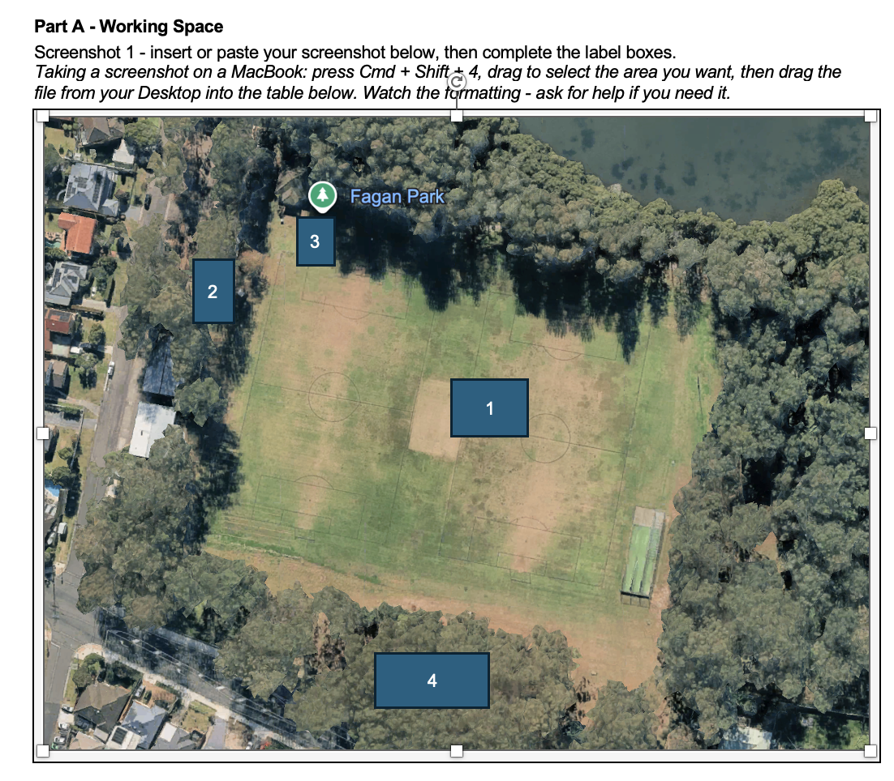

What is this task?
Read this first before you begin
Choose your place
Pick ONE place on the Central Coast to investigate. Your options are:
- Gosford CBD
- Terrigal Beach area
- Woy Woy town centre
- The Entrance
- Tuggerah town centre
- Erina Fair area
Work through Parts A, B, C and D in order
Each part builds on the one before. Your evidence from Parts A, B and C will feed directly into your written response in Part D.
Use your assessment booklet
You have been given a working document. Use it alongside this page. It has planning spaces, sentence starters, and a full vocabulary list.
Submit as a PDF or Word document
Upload your completed task to iLearn by 9pm on Friday 19 June 2026.
Annotated Google Earth Screenshots
Up to 3 screenshots with at least 4 labels total
Open Google Earth and navigate to your place
Go to earth.google.com. Search for your chosen place. Try different zoom levels to show different aspects of the area.
Take up to THREE screenshots
On a MacBook: press Cmd + Shift + 4, drag to select the area, then drag the file from your Desktop into the table in your booklet.
You only need ONE screenshot, but up to three is fine if you want to show more.
Write at least FOUR labels
Each label is one sentence that follows this formula:
Each label box needs ONE sentence, not a list of dot points. Here is the difference:
Car park [Social]
- Helps people park safely
- Has pedestrian crossing
- Uses security cameras
- Has disabled parking
"Car park [Social] – provides safe and accessible parking for shoppers, improving liveability by making services easy to reach."
The four factors are: Environmental, Social, Economic, Political. A label can use more than one if they genuinely both apply, e.g. [Social/Economic].
Write 2-3 sentences describing liveability
At the bottom of Part A, write a short paragraph describing what your screenshots show about liveability in your chosen place.
Correct structure and factor, liveability connection attempted but surface-level. Place name or feature is vague.

Feature named specifically, correct factor, liveability link is clear and explains who benefits.
Precise geographical vocabulary used naturally, specific groups named, strong liveability reasoning throughout.
Column Graph from Secondary Data
Find data, validate your source, graph it, interpret it
The video showed these sentences as an example of graph interpretation. Read the C response below, then use the tables to understand what is missing at each grade level.
The data shows that income in Point Clare went up from 2011 to 2021.
This suggests that liveability in Point Clare is getting better because people have more money.
One limitation of this data is that it uses old information from 2021.
This is significant because things may have changed since then.
| What | C response | What a B response does instead |
|---|---|---|
| Pattern | You said income went up. | A B response uses the actual numbers from your graph. |
| Liveability link | You said people have more money. | A B response explains what more money actually lets people do, for example, afford housing or access services. |
| Limitation | You named a limitation. | A B response explains why that limitation is a problem for your conclusion. |
| Significance | You said things may have changed. | A B response says what specifically might have changed and why that matters. |
| What | B response | What an A response does instead |
|---|---|---|
| Pattern | You used the numbers. | An A response looks at the numbers more carefully – is the increase getting bigger or smaller over time? |
| Liveability link | You explained what more money lets people do. | An A response asks whether that means liveability is good for everyone in the area, or just some people. |
| Limitation | You explained why the limitation is a problem. | An A response makes a judgement about how serious that limitation actually is. |
| Significance | You gave a specific consequence. | An A response ties it back to the question – what does this mean for how liveable Point Clare actually is? |
Find ONE set of secondary data from an approved source
| Source | What it has | Link |
|---|---|---|
| ABS QuickStats | Population, housing, income data by suburb | abs.gov.au/census |
| Central Coast Council open data | Local council data sets | data.nsw.gov.au |
| SEIFA Index (ABS) | Socioeconomic advantage or disadvantage by area | abs.gov.au |
| BOM | Weather and rainfall data | bom.gov.au |
Validate your source
In your booklet, answer these four questions about your source:
- Who made this data?
- Is this a reliable source? Why?
- Is it recent (within 5 years)?
- What is the URL?
Construct your column graph
You can draw it by hand in your booklet, or use Excel or Google Sheets and insert it. Your graph must have:
- A title
- Labelled axes with units
- A source line at the bottom
Write 3-4 sentences interpreting your graph
Your sentences must cover three things: the pattern, the liveability link, and one limitation of the data.
Under Construction
This section is not yet available. Check back soon.
Teacher access
Annotated Photographs
Up to 3 ground-level photographs with at least 4 labels
Find up to THREE ground-level photographs
Good places to find photos:
- Google Street View – maps.google.com
- Central Coast Council website
- A reputable local news source
Record the source and date for each photograph in your booklet.
Write at least FOUR labels using the same formula as Part A
Notice how Part C labels often name a negative feature too – that is fine and important for your evaluation.
Write 2-3 sentences evaluating liveability
You must include one clear positive and one clear negative observation with specific detail.
Under Construction
This section is not yet available. Check back soon.
Teacher access
Written Response with Recommendation
Around 450 words – use your evidence from Parts A, B and C
Plan your response using the planner in your booklet
Your response needs four sections:
- Introduction – state your place and overall liveability judgement
- Factor Paragraph 1 – one liveability factor with evidence from A, B or C
- Factor Paragraph 2 – a second liveability factor with evidence
- Factor Paragraph 3 – a third liveability factor with evidence
- Recommendation – one specific improvement, targeting a specific group of people
Use at least SIX geographical vocabulary words
These words must appear in your written response. Here are all the options:
Write your recommendation using this sentence frame
Your recommendation must target a specific group of people – for example, elderly residents, young families, people with disabilities, or young people.
Record your word count and check the checklist
Aim for around 450 words. Write your word count at the end of your response. Then work through the pre-submission checklist:
- Part A – up to 3 screenshots, at least 4 labels, each with feature, factor and liveability connection. 2-3 sentences written.
- Part B – column graph with title, labelled axes with units, and source line. Source validation completed. 3-4 sentences written.
- Part C – up to 3 ground-level photographs, at least 4 labels. 2-3 sentences with a clear positive and negative observation.
- Part D – written response around 450 words. Introduction, three factor paragraphs using evidence from A, B and C, and a justified recommendation for a specific group.
- Word count recorded at the end of Part D.
- At least six geographical vocabulary words used in my written response.
- Spelling, grammar and editing checked throughout.
- Reference list completed in alphabetical order. All sources from Parts A, B, C and D included. AI use referenced if applicable.
- Name and class on all work. Submitted as PDF or Word document via iLearn by 9pm on Friday 19 June 2026.